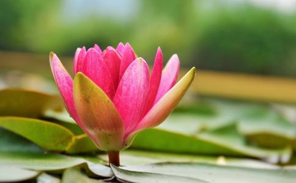

生为一切物命之所爱,死为一切物命之所悲。
当遵慈仁,普惠恩及群生,视天下群生身命,若己身命。《佛灭度後棺歛葬送经》
诸馀罪中,杀业最重。诸功德中,
佛心者,大慈悲是也,以
大慈大悲,名为
慈心即是一切安乐之因缘。《优婆塞戒经》
贪他一臠臠还他,古圣留言终不伪;戒杀
若无财者,其发慈悲心,亦是福德,或劝他人放生,或见人放生,赞叹
人之生日到来,应当持斋戒杀,或是买命放生,或是诵经念佛。修桥砌路煮荼,随意奉行善事,报答生身父母,乳哺三年大德。—真歇禅师
诸放生者,或增福禄,或延寿算,或免急难,或起沈病,或生天堂,或证
放而不杀,与物无冤,非惟安乐今生,以此善根,当来之世,长寿永福,乃至成佛,万类有情,倾心归附。
今更立简易一法,佐使并行,不拘时日,见即买放。於某月下书某日放生若干,巨生以箇数计,细生以觔数计,岁终总算,存以自考。
须知放生一事,实为发起同人,普护物命之最胜善心。—
古圣先贤,莫不以仁慈济物,博爱利生,是如凡为人者,要当以仁存心。—谛闲大师
放生一事,原为启发人之善心,以期戒杀茹素,普令含识各得其所,各尽天年。近之则息杀因,远之则灭杀果,小则全吾心之纯仁,大则弭世界之杀劫。
近来世界人民遭难,杀劫之重,皆是果报所遭;每每劝世人要戒杀放生,吃斋念佛者,也就是要大家免遭因果轮回之报;诸位须当信奉,种植善因,成就佛果。—
疾病癌症,灾难不幸之所以会发生,就是缘於我们以前所造的杀业感召而来的业报。解决之道就是放生,藉著出钱出力赎命放生,来偿还以前我们所欠无数的杀债。—圆因师父
每一个众生最宝贵的是自己的生命,杀了他,他最恼恨,冤仇结得最深,所以说杀业最重,每一个众生最珍贵的还是自己的生命,救了他,他最感激,福善积得最深,所以说放生第一。—圆因师父
所有的善事中,没有比放生更彻底更完美的。
放生最重要的是皈依以及念佛。物命在经过
希望社会诸君,勉力行之,即遇寿辰、结婚、生子,是自己求生,庆生吉祥之事,均宜戒杀放生茹素,以善因而求善果也。—圆瑛大师
放生最容易消业障,但放生所遭受的阻挠最大,所引起的批评最多;这是因为众生业障深重的缘故。因为业障深重,众生物命无福值遇善人受救免除死难,因为业障深重,人们无福救赎生命,偿还杀债。
将我心比他心,把自己设身处地当做异类畜生来想,我们就可以体会到,放生的功德是多麼地大,批评阻碍放生的罪案是多麼地深!
当一个人身患重病,遭遇急难的时候,自己立下誓愿,愿意广行善事,弥补罪业,藉以延长自己的
我们自己赶快去放生,短短的时间内,即可满足我们的愿望,短短的时间内,马上会得到成效。
想要自己所行的善事既深又广,真的非放生莫属。所以说,
戒杀放生,长养慈悲,是
放生是转移
印光大师亦云:一切生命,佛皆视之如子,救一物命,即是救佛一子,诸佛皆大
放生可长养自己的慈悲心肠,悲悯众生,视
(1)无刀兵劫,免战争杀祸。(2)长寿、
印光大师云:世上刀兵大劫,皆由人心好杀所致。人人戒杀放生,则人人全其慈悲爱物之心,而刀兵劫运,亦自消灭於无形,此转移世运之绝大运动也,深望大政治家,大教育家,大农工家,注意於此,力为提倡,必有绝大效果。
以人食羊,羊死为人,人死为羊,如是乃至十生之类,死死生生,互来相嗽,恶业俱生,穷未来际,汝负我命,我还汝债,以是因缘,经千百劫,常在生死。又云:杀彼身命,或食其肉,经微尘劫,相食相诛,犹如轮转,互为高下,无有休息。—
戒杀最好的方法就是吃素,断绝一切肉食,因为佛陀早在《
戒杀放生是一体的二面,须要相辅相成,相管齐下。
一个是全部命丧黄泉,一个是万千中一二不幸死亡,一个是锅鼎中挣扎,
每一个参与放生的人,都是有智慧,有大福报的人。
放生的居士们终年累月不怨不倦地放生,救命危旦夕的物命,活命无数,放生的过程中,更为物命
我们在放生的过程中,事实上受益最大的还是自己。因为在放生的行为中,自己不仅偿还了宿世的杀债,而且物类感恩,龙天护持,诸佛欢喜。
在放生的仪式中,我们自己也跟著物命一起皈依,一起忏悔,一起念佛,激发了自己本具的菩提种子与慈悲心,更为自己无形中创造了无数的福德因缘,藉此功德,正好作为自己往生西方极乐世界的资粮。
诸佛以慈悲为心,放生救赎物命,就是唤醒每个人原本具足的慈悲佛性,放生就是长养吾人的大慈悲心。常行放生,则常养慈悲,常行放生,与佛心更相契,与佛更容易感应道交,常行放生,自心充满了慈悲,自心就是佛心,焉有不成佛的道理?
吃素放生应该同时并重,既不再造杀业,又能偿还杀债,如此修行最为
印光大师在《复愚僧书》曾云:彼必期於万无一失。方肯行放生。则令世人尽寿皆不行戒杀放生之事矣。其人将来必膺万无一人能救已於将死也。哀哉痛哉。印祖所言,乃今日阻挠批评放生的所有人士一大警语。
阻挠批评人家放生,其罪过就等於杀生。
《楞严经》云:食肉者,所求功德,悉不成就。
放生就是我们见物命众生受擒受抓,失去自由,行将被砍被杀之际,一如见到自己父母手足妻女般,不忍见其苦难,遭受杀戮,发起慈悲心,予以救赎,还其自由,放其生命,如此而已。
放生就是积最大的福;放生就是行最大的善,积福行善,所有功德,莫过放生。
每天拜
吃一次肉,造一次杀业,给一次怨仇;吃十次肉,造十次杀业,给十次怨仇。
善导大师云:如来所以兴出世,唯说弥陀本愿海。
《金光明经》云:所谓金光,灭除诸恶,千劫所作,极恶重罪,若能至心,一忏悔者,如是众罪,悉皆灭尽,我今已说,忏悔之法,是金光明,清净微妙,速能灭除,一切业障。
《大集经》云:末法亿亿人修行,罕一得道,唯依念佛,得度生死。
一句南无阿弥陀佛,是佛陀说法四十九年的最最精华,是捷径中的捷径!是妙法中的妙法。
念一句南无阿弥陀佛,就等於总诵
《
莲池大师云:疾病之由,多从杀生中来,故偏重放生也。
印祖云:瘟疫水火诸灾横多,戒杀放生者绝少遭逢,是如护生,原属护自。戒杀可免天杀、鬼神杀、盗贼杀、未来怨怨相杀报。
戒杀之众,善神守护,灾横消除,寿算绵长,子孙贤孝,吉祥种种,难可具除。若更随力放生,加持念佛,不但增崇福德,必当随愿往生,永脱轮回,入不退地。
印光大师云:戒杀放生者,来世得生於四王天,享无极之福;若兼修净土者,直可往生於西方极乐国土,其功德实无涯矣。
凡有愿家门清泰,身心康宁,天下太平,人民安乐者,请皆于戒杀放生、喫素、念佛中求之,则求无不得矣。
人惟愿眷属团聚,寿命延长,身心安乐,诸缘如意,正应发大悲心,行放生业,使天地鬼神,悉皆愍我爱物之诚,则向之所欲,当可即得。
我今幸承宿世福善,生於人道,固宜解怨释结,戒杀放生,令彼一切有生命者,各得其所。又为念佛回向净土,令得度脱。
凡大圣大贤,无不以戒杀放生,为挽杀劫,以培福果,息刀兵,而乐天年之基祉。
圆瑛大师云:吾人当
《经》云:戒杀放生之人得二种福报,一者长寿,二者多福多寿无病。
《契经》:戒杀放生,得长寿报,又戒杀放生,可解怨释结,长养悲心,润菩提种。
《梵网经》:一切男子是我父,一切女人是我母,我生生无不从受生,故六道众生,皆是我父母,而杀而食者,即杀我父母,亦杀我故身,一切地水是我先身,一切火风是本体,故常行放生,生生受生,
《分别
放生就是给物命众生一个机会。一个重获自由,重拾生机的机会;一个
放生也是给我们自己一个机会。一个救生赎命,偿还杀债的机会;一个广积福德,清除业障的机会,千万不要因为任何的讥议批评,让业重福薄的我们,一个机会都没有。
救众生如同救一佛子,更等於救一未来佛。
吃素而不放生,以前欠的杀债还是有果报的;放生而不吃素,所赚得的功德,又因为吃肉杀生都赔光了。
修行人以念佛为正行,以放生为助行。
虽有许多批评阻挠,我们更要有虽千万人吾往矣的勇气与承担去放生,坚定放生,信愿放生,用一辈子去放生。
放生三施俱全。
别让知识学问匡住了慈悲心。当我们真正放生时,所有一切的知识学问都应舍掉,都应放下,只留那一念我们对待众生清清净净的慈悲,这才是放生真正的意义。
鸟站一如等待大赦的囚犯集中营,不要有如果我们不放,他们便不会去抓的想法。
放生,正是佛陀亲口告诫我们长养慈悲灭罪消愆的最好方法。
跟随佛陀,跟随历代诸祖大德,跟随善知识的步伐,努力实践,终生不悔不倦。
但愿所有世人,力行放生;更愿所有念佛人,常行放生,因为放生功德,最为第一,舍此不行,是谓痴狂!
父母教子女,老师教学生,记者赞放生,作家弘扬放生,出版商提倡放生,明星现身说法带放生,政府首长鼓励放生,富翁用钱放生,盖放生园,弘法人开示放生。